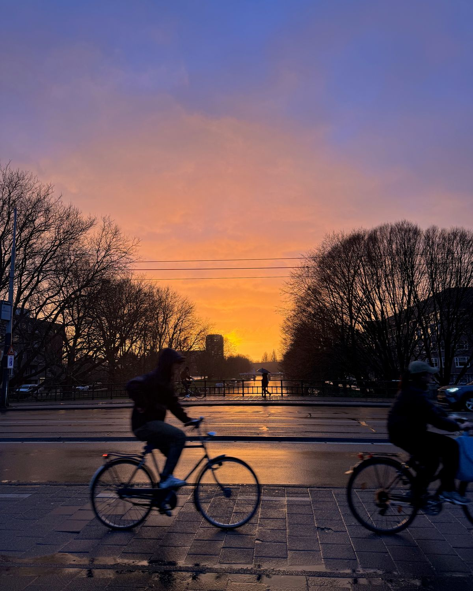
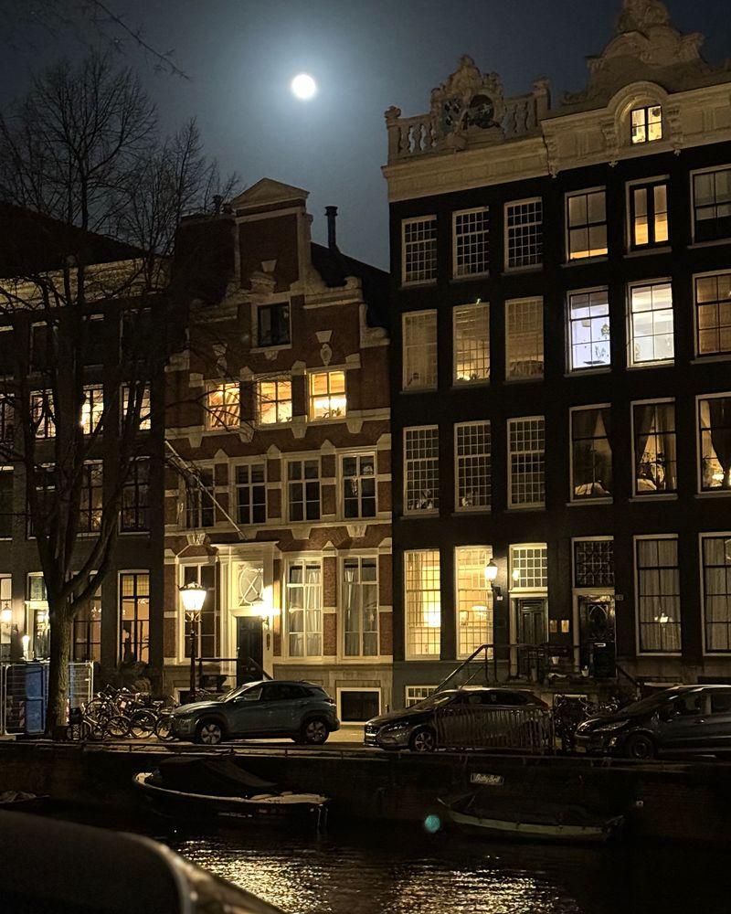
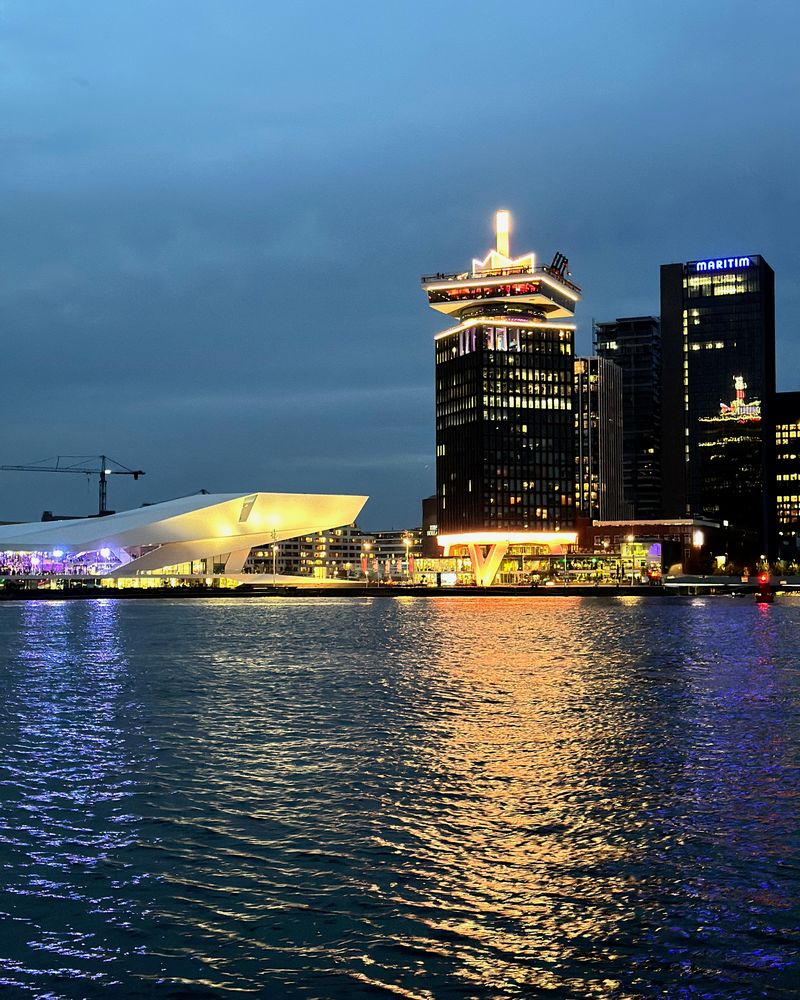
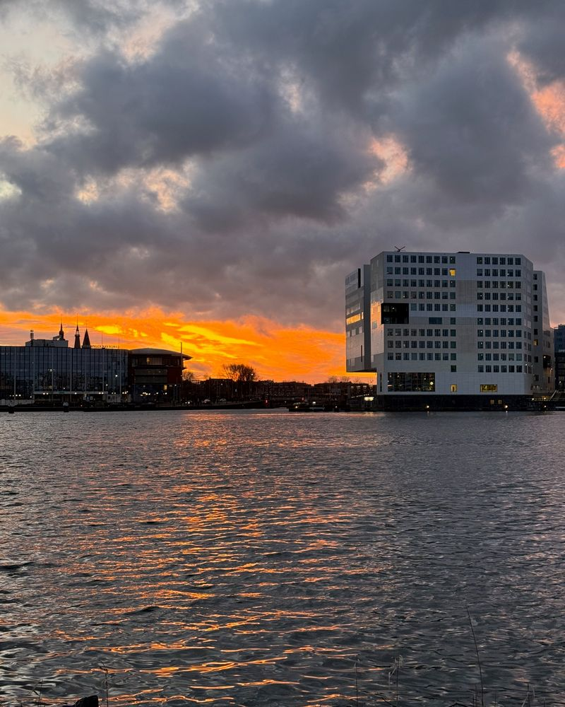
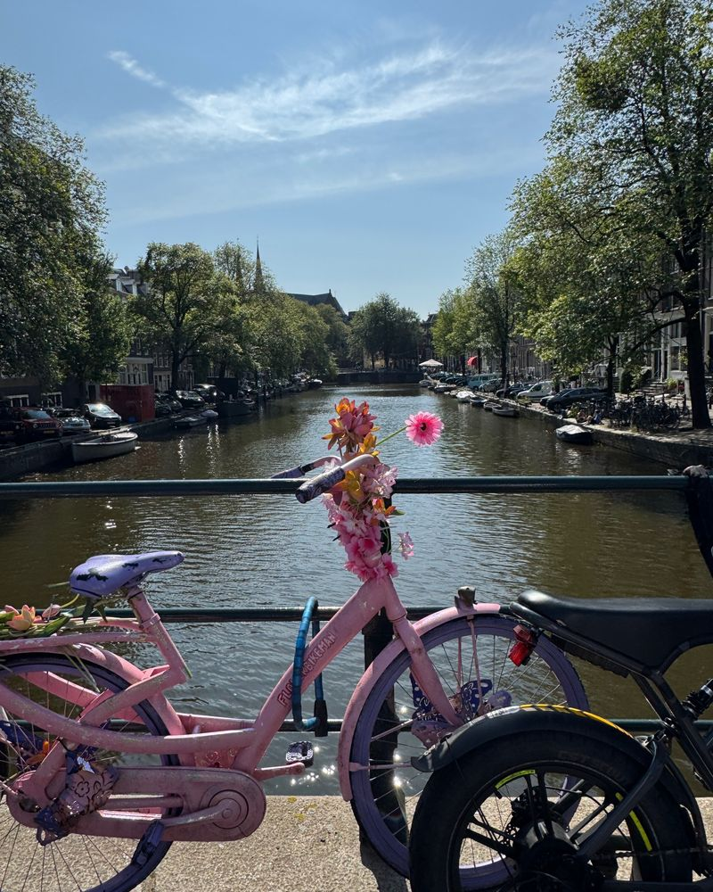
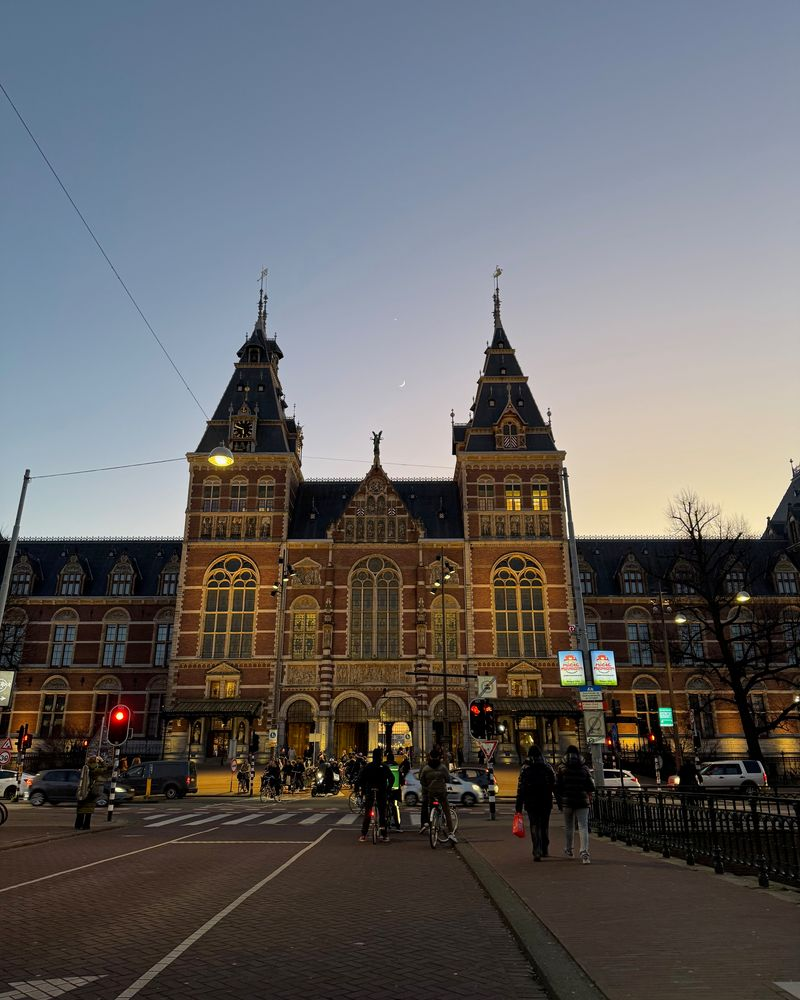

Hi, I’m Pablo.Oi, eu sou o Pablo.
I work in IT support in Amsterdam. I’ve spent more than seven years keeping computers and networks running in São Paulo, Dublin and Malta. I also build my own tools with AI, and I’m a photographer.Trabalho com suporte de TI em Amsterdam. Passei mais de sete anos cuidando de computadores e redes em São Paulo, Dublin e Malta. Também crio minhas ferramentas com IA e sou fotógrafo.
What I work withCom o que eu trabalho
- AIIA
- Claude Cowork
- AgentsAgentes
- Problem solvingResolução de problemas
- Smart homeCasa inteligente
Amsterdam-West. EU citizen, no visa needed.Amsterdam-West. Cidadão da UE, sem necessidade de visto.

How I can helpComo posso ajudar
For homes and small businesses in Amsterdam, in English or Portuguese. I come over when the job needs hands and work remotely when it doesn’t. Quotes are free.Atendo em casa e em pequenas empresas em Amsterdam, em inglês ou português. Vou até você quando o serviço pede presença e resolvo a distância quando dá. O orçamento é grátis.
-
IT support for small businessesSuporte de TI para pequenas empresas
I set up laptops and Microsoft 365 for your team and step in when something breaks.Configuro notebooks e Microsoft 365 para a sua equipe e resolvo quando algo para de funcionar.
On-site or remotePresencial ou remoto -
Smart home setupCasa inteligente
I connect Alexa or Google Home to your lights and set up a routine for when you leave the house.Conecto a Alexa ou o Google Home às suas luzes e crio uma rotina para quando você sai de casa.
On-sitePresencial -
Repairs and device setupReparos e configuração
I speed up slow computers and move everything to your new phone or Mac.Deixo computador lento rápido de novo e passo tudo para o seu celular ou Mac novo.
On-site or remotePresencial ou remoto -
AI automationAutomação com IA
I hand one repetitive task to an AI agent and write the rules it has to follow.Passo uma tarefa repetitiva para um agente de IA e escrevo as regras que ele tem que seguir.
RemoteRemoto -
Websites and small appsSites e apps pequenos
A one-page site for your shop, or a small tool your team opens every day.Um site de uma página para o seu negócio, ou uma ferramenta simples que a equipe usa todo dia.
RemoteRemoto -
AV, streaming and CCTVÁudio e vídeo, streaming e CFTV
I install and calibrate cameras and audio, and check that your CCTV records.Instalo e calibro câmeras e áudio, e confiro se o CFTV está gravando.
On-sitePresencial
ExperienceExperiência
- 2026IT Support TechnicianTécnico de suporte de TIReliga · St Julian’s, MaltaOn-site support for live video studios and offices: workstations, AV, CCTV and network cabling.Suporte presencial em estúdios de vídeo ao vivo e escritórios: estações de trabalho, áudio e vídeo, CFTV e cabeamento de rede.
- 2021–2023Technical Support and SalesSuporte técnico e vendasIT-FIX · DublinMac, iPhone and Windows repairs, data transfers and backups.Reparos de Mac, iPhone e Windows, transferência de dados e backups.
- 2019Technical Support SpecialistEspecialista em suporte técnicoGPO Soluções em Tecnologia · São PauloWindows, macOS and Linux support and Microsoft 365 admin.Suporte a Windows, macOS e Linux, e administração do Microsoft 365.
- 2015–2016Software Technical SupportSuporte técnico de softwareIdeologica · São PauloFirst and second line, with SQL queries and stored procedures.Atendimento N1 e N2, com consultas SQL e stored procedures.
- 2013–2014Support AnalystAnalista de suporteKogut eBusiness · São PauloUser support and live video streaming.Suporte a usuários e streaming de vídeo ao vivo.
- 2012–2013IT CoordinatorCoordenador de TITauá Hotels & Convention · São PauloBuilt the hotel’s IT department from scratch.Montei do zero o departamento de TI do hotel.
CertificatesCertificados
- Microsoft IT Support Specialist2026
- Google AI Essentials2025
- Google Technical Support Fundamentals2021
- Systems Analysis and Development, UNIFAATAnálise e Desenvolvimento de Sistemas, UNIFAAT2010–13
LanguagesIdiomas
- PortuguesePortuguêsnativenativo
- EnglishInglêsfluentfluente
- SpanishEspanholintermediateintermediário
- ItalianItalianobasicbásico


PhotographyFotografia
Amsterdam is what I shoot most, usually at night or at sunset. I took every photo on this site.Fotografo mais Amsterdam, quase sempre à noite ou no pôr do sol. Todas as fotos deste site são minhas.





Let’s talkVamos conversar
Tell me about the role or the problem you want solved. The form opens your email app with the message ready to send.Me conta sobre a vaga ou o problema que você quer resolver. O formulário abre o seu app de e-mail com a mensagem pronta para enviar.